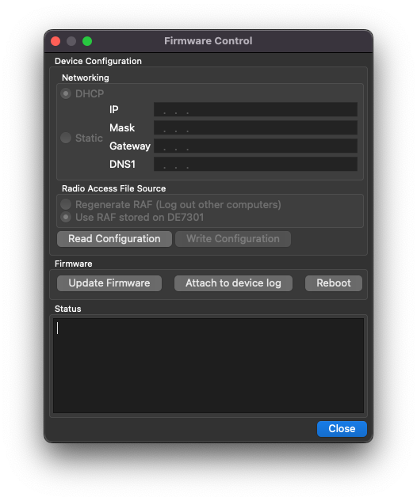

Note
In Limited Beta. Product launch targeted Q2 ‘23. Everything is subject to change.
USB Functions¶
The USB-C Port on the DE7301 is normally only used for 5VDC Power. Modifying device settings and Firmware Updates are also accomplished over this interface
Before modifying any settings, first read back the configuration from the device.
Network Settings¶
In the vast majority of applications, the DE7301 hardware will automatically acquire an IP address from your router (via DHCP) on your local network.
In some scenarios, a manual IP address may be required and may be entered here.
Security Settings¶
From the factory, the radio comes with a preset Radio Access File. The RAF is automatically read from the DE7301 when “Read Configuration” is clicked.
The RAF has three options:
Regenerate RAF (Log out other computers)
If this option is selected, when “Write Configuration” is clicked, a new RAF is generated
This new RAF is stored to your computer and to the DE7301
If using Proxy Mode, you must export the RAF and distribute it to your other computers
Use RAF stored on DE7301
This is the default option and should be checked if you do not want to change the RAF
This will leave the RAF in the DE7301 unmodified if selected
Use RAF stored in this application
This option is displayed if the RAF stored on your computer and the RAF in the radio are different
This will replace the RAF in the DE7301 if selected.
Credentials can be exported as detailed in the Security section.
Firmware Updates¶
Write Firmware: This rewrites the firmware on the device
Attach to device log: This connects to the embedded processor logging facilities.
Reboot: This reboots the DE7301 hardware.
Note
In Windows, using the “Write Firmware” function will preclude “Attach to Log” from working. See Github issue